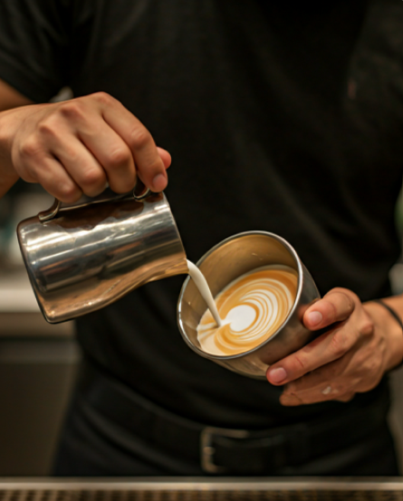
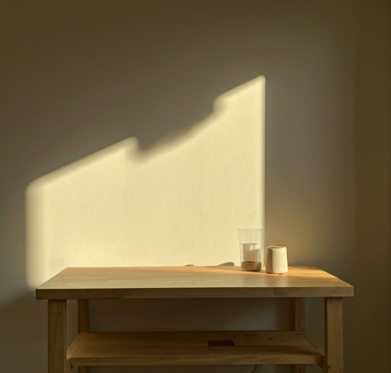

Crafting Moments
One Sip at a Time
Discover an artisanal journey through premium coffees, fine teas, and fresh-pressed juices in our welcoming sanctuary.
Your Daily Retreat
Our journey began in 2010 with a simple mission: to bring the finest artisanal coffee to our local community. What started as a small passion project in a humble corner of the city has grown into a beloved sanctuary for coffee lovers.
Every bean is sourced with meticulous care from sustainable farms across the globe. We believe that the process is just as important as the result, which is why every pour at Brew Haven is treated as a unique work of art.
Over the decade, we haven't just served coffee; we've built a home for thinkers, dreamers, and early risers. Our walls have heard countless stories, and we're honored to be a part of yours.
Read our full history
"Quality ingredients. Shared moments. We believe the perfect beverage is the foundation of a stronger community."
Sustainable
Ethically sourced beans from certified fair-trade farms.
Community
A space designed for connection and conversation.
Curated Selection
From master-roasted coffee to hand-picked teas and cold-pressed juices.

Seasonal Harvest
The soul of our smoothies and infusions lies in the seasons. We partner with local orchards to source peak-ripeness berries, heirloom citrus, and aromatic herbs like Thai basil and garden mint.
- Hand-picked organic produce
- Zero artificial sweeteners or syrups
- Rotating monthly specialty infusions
The Art of the Craft
Precision Brewing
From pour-overs to cold brews, we calibrate every variable—grind size, water temperature, and extraction time—to highlight each bean's unique profile.
Steeping Mastery
Our whole-leaf teas are steeped at precise temperatures to unlock delicate floral notes and deep earthy undertones without bitterness.
Cold-Pressed Purity
Our juices are hydraulic-pressed to retain maximum nutrients and enzymes, delivering vibrant flavors in every refreshing drop.


Experience the Sanctuary
Beyond the beverage, Brew Haven offers an
atmosphere that invites you to slow down. Whether
you're here for
your morning ritual or an afternoon escape, our space is tailored for
your
comfort.
High-Speed Connectivity
Perfect for those who work while they sip.
Community Events
Live acoustic sets and monthly coffee tastings.